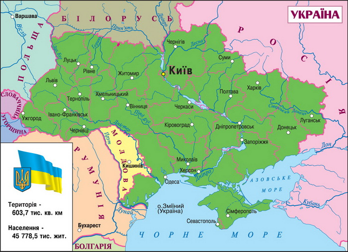
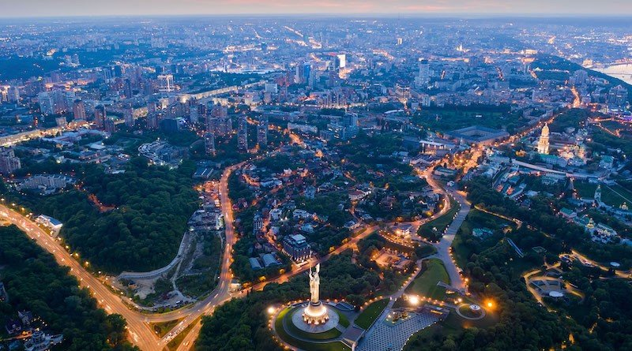
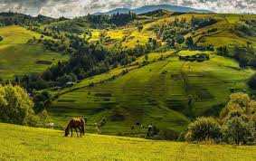
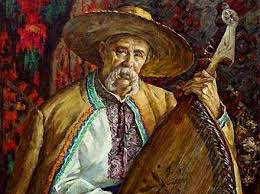

Україна
Розположення
Україна — це велика країна в Східній Європі, яка межує з Польщею, ( недодержави білоруссю, росією,) Молдовою, Румунією, Угорщиною та Словаччиною. Вона має багату історію, культуру та природні ресурси.
Столиця
Київ — це найбільше місто України та її столиця. Воно відоме своєю архітектурою, пам'ятками та культурною спадщиною.
Природа
Україна має різноманітні природні ландшафти: від Карпатських гір на заході до Чорного моря на півдні. Річка Дніпро є однією з найбільших річок Європи.
Культура
Українська культура багата на традиції, музику та літературу. Вишиванка є одним із найвідоміших символів української культури.
-
text...
- text...
-
text...
- text...
- text...
- text...
- text...
- text...
- text...
- text...